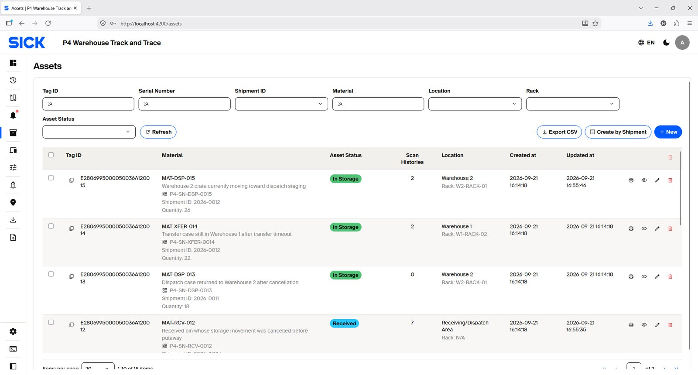
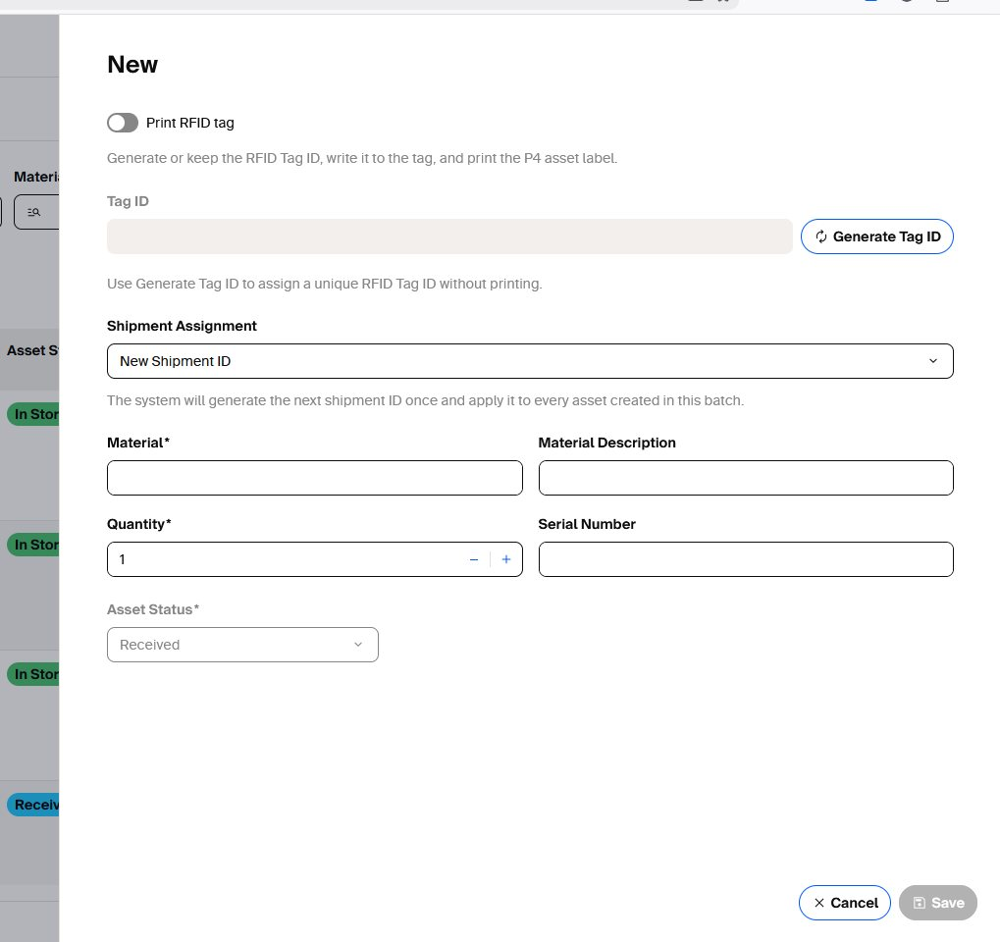
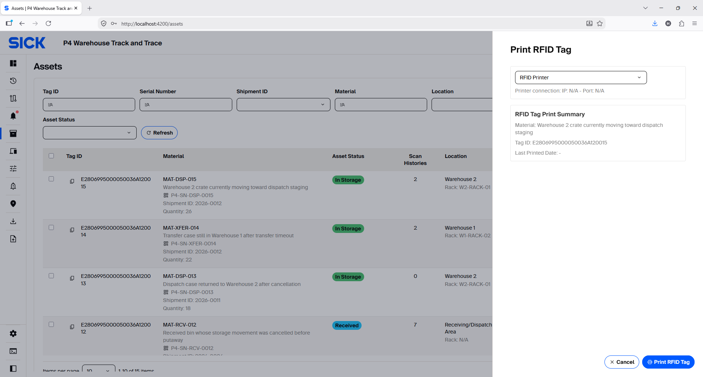
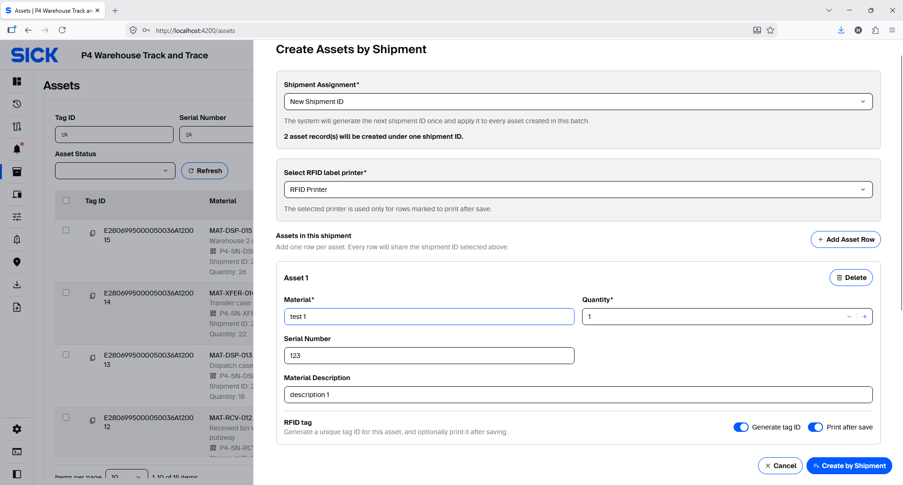
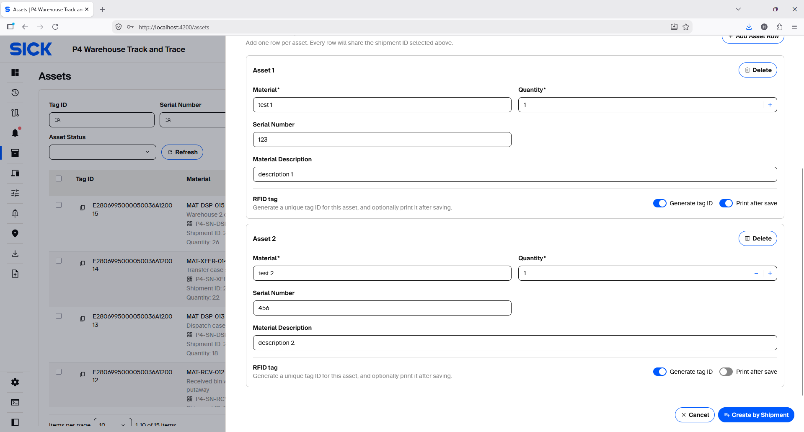

Assets
Create, review and maintain Asset master data, Shipment assignments and RFID tags.
Manage Assets
Use Assets to find inventory by Tag ID, Serial Number, Shipment ID, Material or Asset Status.

Create one Asset
- Select New.
- Choose or generate the RFID Tag ID. Turn on Print RFID tag if a configured printer should print immediately.
- Assign an existing Shipment ID or choose the option that creates the next Shipment ID.
- Enter Material, Material Description, Quantity and Serial Number as needed.
- Leave system-managed status/location fields at their valid initial state unless the UI explicitly allows a controlled choice.
- Save, then attach the printed RFID label to the correct physical Asset.


Create Assets by Shipment
Use Create by Shipment when several Assets share the same Shipment ID. Add one row per Asset, enter its material/quantity/serial data, and generate or assign its RFID Tag ID.

